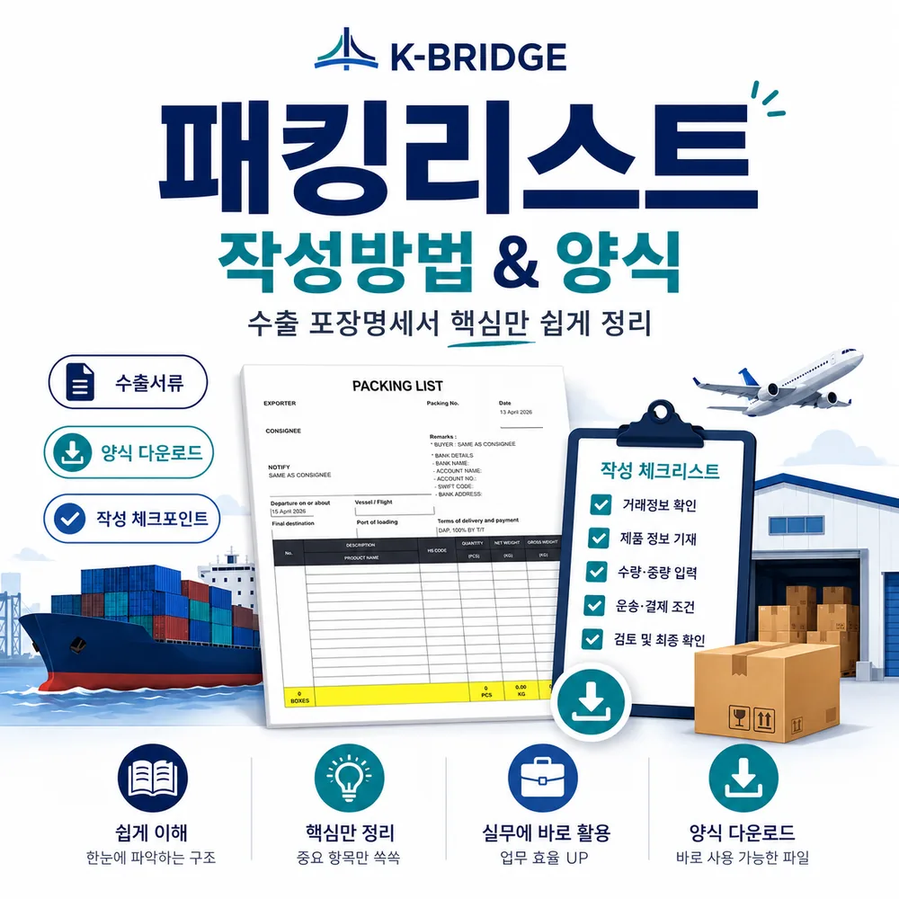
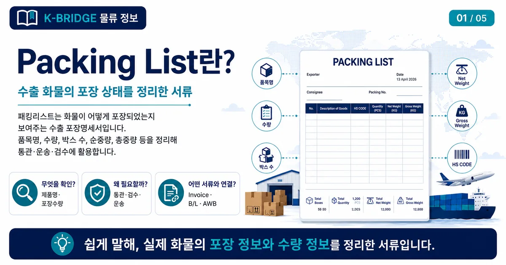
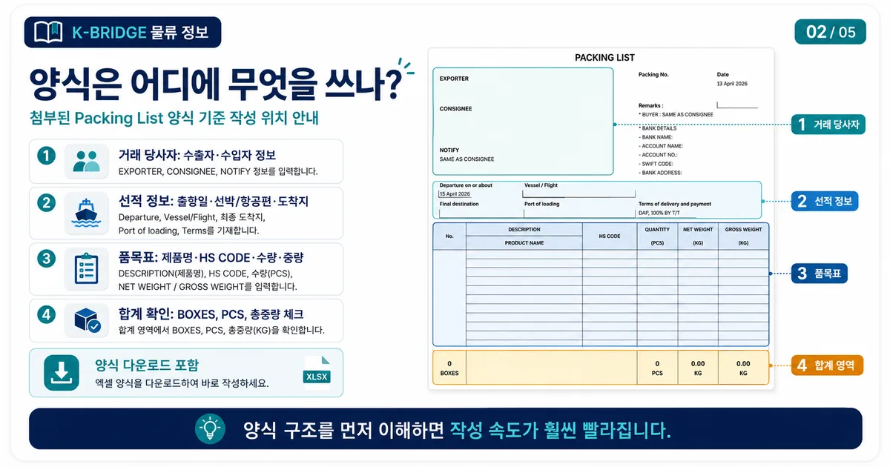
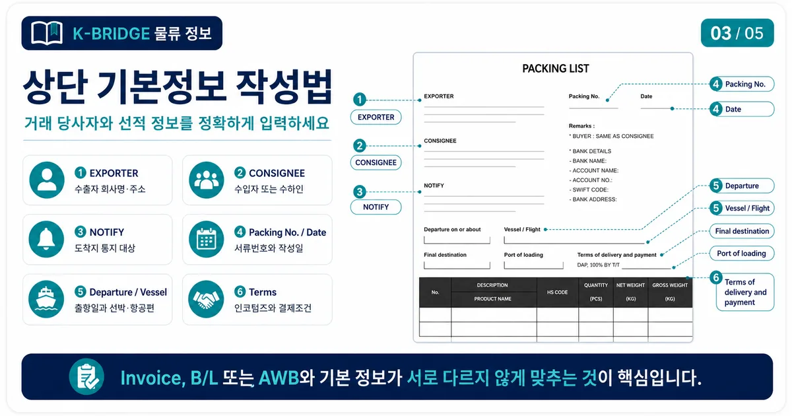
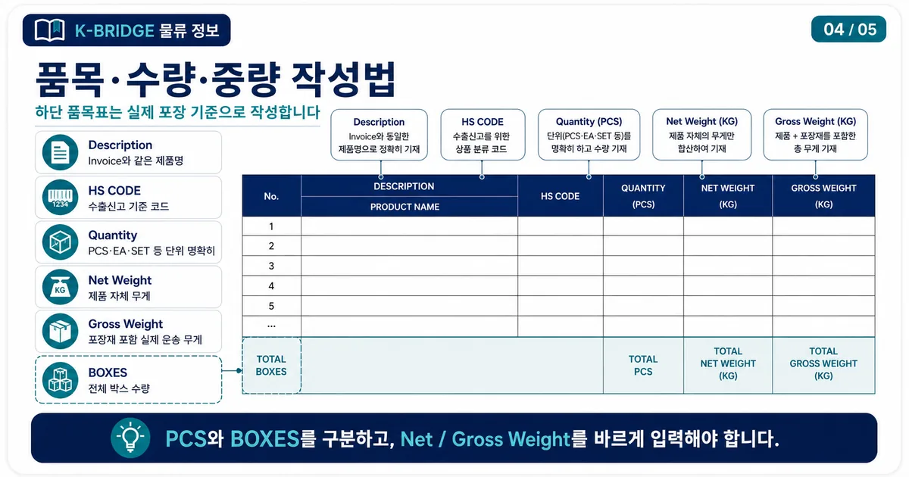
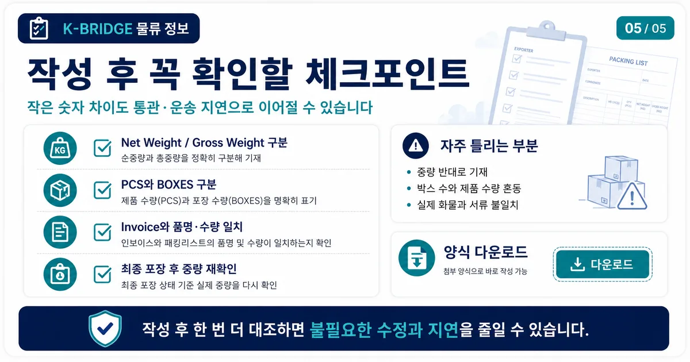

핵심 요약
Packing List는 화물이 어떻게 포장되어 있는지 보여주는 수출 포장명세서입니다. Invoice가 거래 금액과 품목을 설명한다면, Packing List는 박스 수량, 제품 수량, 순중량, 총중량, HS CODE 등 실제 포장 정보를 정리합니다.
Packing List란?
패킹리스트는 수출 화물의 포장 상태를 설명하는 서류입니다. 박스가 몇 개인지, 각 품목이 몇 개 들어 있는지, 순중량과 총중량은 얼마인지, 어떤 HS CODE로 신고할지 등을 정리합니다.

도착지에서는 이 서류를 보고 세관 통관, 창고 입고, 수량 검수, 운송서류 확인을 진행합니다. 따라서 패킹리스트의 숫자가 실제 화물과 다르면 통관 지연이나 추가 확인 요청이 발생할 수 있습니다.
패킹리스트 양식 다운로드
아래 파일은 첨부된 PACKING LIST 양식을 기준으로 포함한 다운로드용 엑셀 파일입니다. 수출자, 수입자, 선적 정보, 품목별 수량과 중량을 순서대로 입력할 수 있도록 구성되어 있습니다.
KBRIDGE Packing List 양식
파일 형식: XLSX · 구성: PACKING LIST 시트 · 사용 목적: 수출 포장명세서 작성

양식은 회사·품목·거래 조건에 따라 수정해서 사용할 수 있습니다. 단, 바이어가 별도 양식을 지정한 경우에는 바이어 양식과 포워더 요청 항목을 함께 확인하는 것이 좋습니다.
작성 전 준비사항
패킹리스트를 작성하기 전에는 제품 정보와 포장 정보를 먼저 정리해야 합니다. 실제 포장이 끝난 뒤 최종 박스 수량과 중량이 달라지는 경우가 많기 때문에, 임의 숫자로 먼저 작성하지 않는 것이 좋습니다.
- 수출자와 수입자의 정확한 회사명, 주소, 담당자 정보를 준비합니다.
- 제품명, HS CODE, 수량, 단위를 정리합니다.
- 박스 수량, 박스별 제품 수량, 총 PCS를 확인합니다.
- 제품 자체 무게인 Net Weight와 포장재 포함 무게인 Gross Weight를 구분합니다.
- 선적항, 도착지, 인코텀즈 조건, 결제 조건을 Invoice와 동일하게 맞춥니다.
상단 기본정보 작성법
첨부 양식의 상단 영역은 거래 당사자와 운송 기본정보를 적는 부분입니다. 이 정보는 Invoice, B/L 또는 AWB와 함께 확인되므로 서로 다르게 작성하지 않도록 주의해야 합니다.

품목·수량·중량 작성법
패킹리스트에서 가장 중요한 부분은 하단 품목표입니다. 실제 포장 기준으로 품목명, HS CODE, 수량, 중량을 작성해야 하며, 전체 합계가 맞는지 확인해야 합니다.

| 항목 | 작성 방법 |
|---|---|
| No.순번 | 품목이 여러 개인 경우 1, 2, 3 순서로 구분합니다. |
| Description제품명 | Invoice와 같은 제품명을 사용합니다. 모델명이나 규격이 중요하면 함께 적습니다. |
| HS CODE품목분류 | 수출신고와 목적지 통관 기준이 되므로 품목에 맞는 코드를 확인합니다. |
| Quantity수량 | PCS, SET, EA 등 단위를 명확하게 적습니다. |
| Net Weight순중량 | 제품 자체의 무게입니다. 박스, 팔레트, 완충재 무게는 제외합니다. |
| Gross Weight총중량 | 제품과 포장재를 모두 포함한 실제 운송 무게입니다. |
| BOXES박스 수량 | 하단 합계 영역에 전체 박스 수량을 입력합니다. |
자주 틀리는 부분
패킹리스트는 보기에는 단순한 서류지만, 실제 현장에서는 작은 숫자 차이로 확인 요청이 자주 발생합니다. 아래 항목은 작성 후 반드시 한 번 더 확인해야 합니다.

- Net Weight와 Gross Weight를 반대로 쓰는 경우가 많습니다. Net은 제품 자체 무게, Gross는 포장재 포함 무게입니다.
- PCS와 BOXES를 혼동하지 않아야 합니다. PCS는 제품 수량, BOXES는 포장 박스 수량입니다.
- Invoice와 Packing List의 품명, 수량, HS CODE가 다르면 수출신고나 도착지 통관에서 확인 요청이 발생할 수 있습니다.
- 실제 포장 전 예상 중량으로 작성한 뒤 최종 중량을 수정하지 않으면 B/L 또는 AWB 정보와 불일치할 수 있습니다.
- 식품, 화장품, 배터리, 화학제품, 중고 장비는 품목에 따라 추가 서류가 필요할 수 있습니다.
자주 묻는 질문
Q. Packing List와 Commercial Invoice는 같은 서류인가요?
Q. 패킹리스트는 꼭 영어로 작성해야 하나요?
Q. 박스별 상세 내역도 꼭 적어야 하나요?
Q. 양식의 Remarks에는 무엇을 쓰나요?
수출서류가 헷갈린다면 케이브릿지와 먼저 확인하세요
제품 정보, 포장 수량, 목적지만 정리되어도 수출서류와 운송 흐름을 빠르게 검토할 수 있습니다. 해상, 항공, 해외특송, 샘플 발송, 기업 수출 물류까지 필요한 방식으로 상담해드립니다.